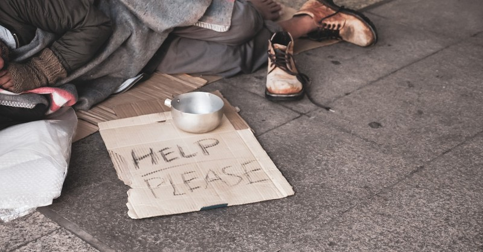
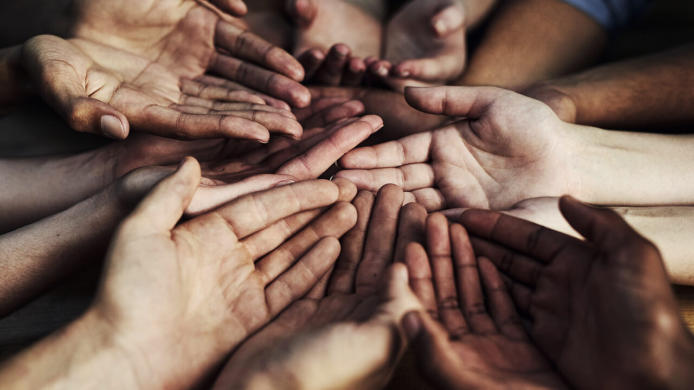

Poverty is a terrible problem that affects millions of people all around the world. Many people struggle to meet their basic needs and provide for their families, hoping for a better life free of the constant distractions and uncertainties that come with living in poverty.

Ways to Help the Poor
Contact Local Representatives
Donate to Trustworthy Non-governmental Organizations (NGOs)
Raise Awareness
Hold Fundraisers
Support Brands that Have People in Mind

Ways to Help the Poor
Do Research
Volunteer
Divert Money from Unnecessary Purchases
Know Where Your Purchases Come from and Who Made Them